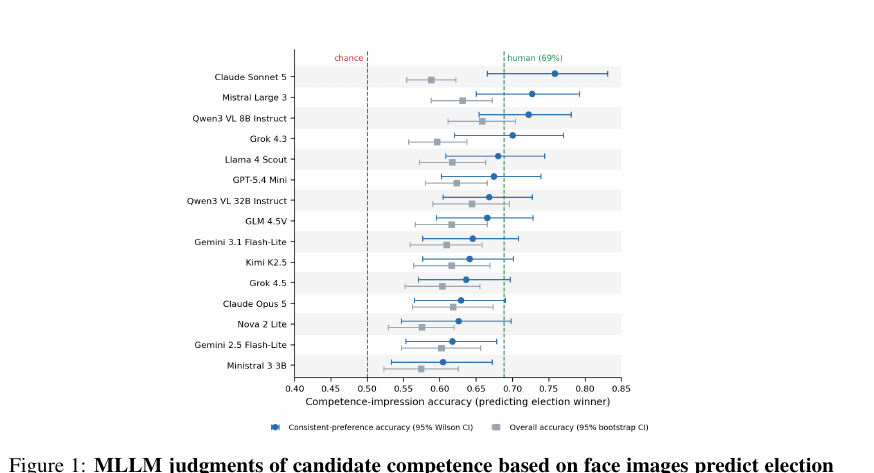
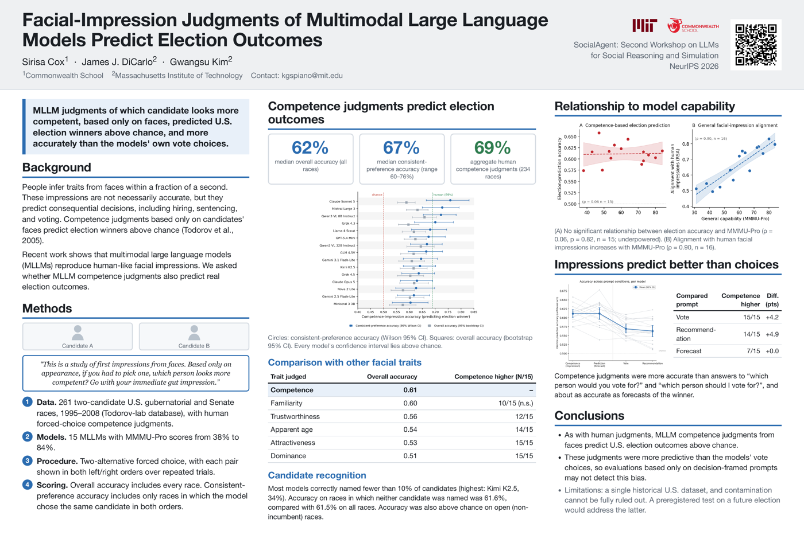

1Commonwealth School 2Massachusetts Institute of Technology
SocialAgent: 2nd Workshop on LLMs for Social Reasoning and Simulation, NeurIPS 2026 · Atlanta · Dec 13, 2026

Humans rapidly infer social traits of others from their faces, and these superficial judgments can predict consequential behavioral outcomes, including electoral choices. Given growing evidence that multimodal large language models (MLLMs) reproduce human-like facial impression judgments, we asked whether MLLMs' facial-impression judgments similarly predict real election outcomes. We presented MLLMs with paired facial photographs of the winner and runner-up in U.S. gubernatorial and Senate races held between 1995 and 2008 and asked which candidate appeared more competent. The models' competence judgments predicted the election outcomes with 62% median accuracy, which rose to 60–76% across models when limited to races where the models exhibited consistent preference (aggregate human competence judgments predict with 69% accuracy across all 234 races with available human ratings, and 70% median accuracy when filtered for consistent preference). This predictive ability was consistently observed across 15 models spanning a wide range of general multimodal reasoning capabilities, as measured by the MMMU-Pro benchmark. There was no detectable relationship between election-prediction accuracy and general multimodal reasoning capability. Interestingly, when the same models were instead asked whom they would vote for or recommend voting for, their responses predicted election outcomes less accurately than their competence judgments. These results suggest that general-purpose MLLMs exhibit human-like facial biases that may appear innocuous yet are associated with consequential human behavior.

Open the full-resolution poster (PDF) · SocialAgent @ NeurIPS 2026.
@inproceedings{cox2026facial,
title = {Facial-Impression Judgments of Multimodal Large Language
Models Predict Election Outcomes},
author = {Cox, Sirisa and DiCarlo, James J. and Kim, Gwangsu},
booktitle = {SocialAgent: Second Workshop on Large Language Models for
Social Reasoning and Simulation, NeurIPS},
year = {2026}
}